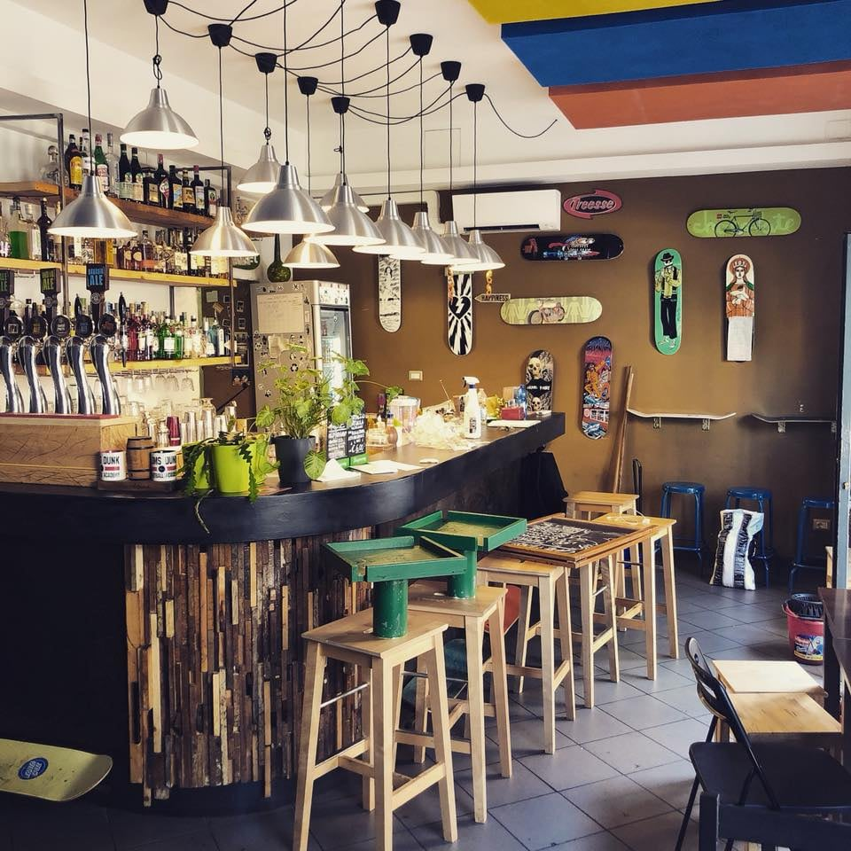
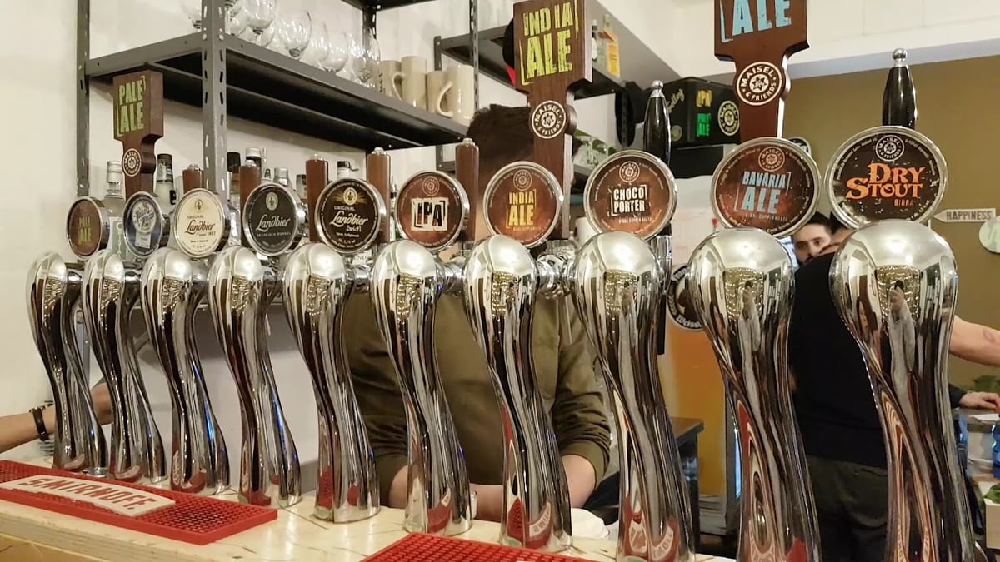

Birre artigianali alla spina
Spine che cambiano spesso: IPA, Pils, Weizen, stout e chicche di stagione. Ordini alla cassa e ritiri al bancone.
Craft bar · Piazza Morbegno · NoLo
«Ci penso io». Il bar di quartiere di NoLo — birre artigianali, cocktail e serate che finiscono tardi.

Piazza Morbegno 201Il bar
In Piazza Morbegno, nel cuore di NoLo — la «piccola Parigi» di Milano — Ghe Pensi Mi è il bar dove il quartiere si ritrova: informale, alternativo, sempre pieno di gente. Una clientela giovane, tavoli fuori quando è bello, e la sensazione di stare tra amici.
Il cuore è la birra artigianale alla spina — spine che ruotano di continuo, dalla IPA alla Weizen — ma qui trovi anche cocktail fatti bene, un aperitivo generoso e cucina informale. E la sera si accende: DJ set nei weekend e serate di stand-up comedy.

02Cosa c'è
Spine che cambiano spesso: IPA, Pils, Weizen, stout e chicche di stagione. Ordini alla cassa e ritiri al bancone.
Grandi classici e qualche firma della casa, fatti bene senza prendersi troppo sul serio.
Stuzzichini italiani, panini e piatti informali per accompagnare — buoni e a prezzo onesto.
Nei weekend si balla, e ogni tanto si ride: serate di comedy e musica che fanno di NoLo quello che è.
Il menù delle birre ruota di continuo: passa e fatti consigliare la spina del giorno.
03Galleria
04Dove & orari
| Lunedì | Chiuso |
|---|---|
| Martedì | 17:00 – 01:00 |
| Mercoledì | 17:00 – 01:00 |
| Giovedì | 17:00 – 01:00 |
| Venerdì | 17:00 – 01:00 |
| Sabato | 17:00 – 01:00 |
| Domenica | 17:00 – 00:30 |
Piazza Morbegno 2, 20127 Milano
02 8348 7798 · info@ghepensi-mi.it
La mappa è di Google: aprendola, Google riceve il tuo indirizzo IP e può usare i suoi cookie.
05Recensioni
“The best bar in town!! Drink nice cocktails, eat cheap though tasty food. The place is always alive and full of people — you can even watch stand-up comedies there.”
Jenia · Local Guide
“Excellent craft beer! I had the New England hazy IPA and loved it. It was a weekend so the bar was packed.”
Phil · Local Guide
“Bellissimo bar in piazza Morbegno, al centro del quartiere NoLo, la piccola Parigi. Frequentato da una clientela giovane.”
Gian Piero · Local Guide
“Aperitivo molto buono, il personale gentilissimo e le birre ottime.”
Google
“Consigliato per serate easy in atmosfera accogliente e genuina.”
Google
06Passa a trovarci
Passa in Piazza Morbegno o chiama per prenotare un tavolo nelle sere di punta. Il resto — la spina giusta, la serata giusta — ghe pensi mi.
Birre artigianali alla spina che ruotano spesso (IPA, Pils, Weizen, stout e non solo), cocktail e una buona lista di aperitivi. Ordini alla cassa e ritiri al bancone della spina.
Sì: stuzzichini italiani, panini e piatti per accompagnare la birra o l'aperitivo, con opzioni per tutti. Cucina informale e prezzi onesti.
Il locale è vivo: DJ set nei weekend, serate di stand-up comedy e aperitivi affollati. Nei giorni di punta conviene prenotare un tavolo.
In Piazza Morbegno 2, nel cuore di NoLo. Aperti da martedì a sabato 17:00–01:00, domenica 17:00–00:30. Lunedì chiuso.